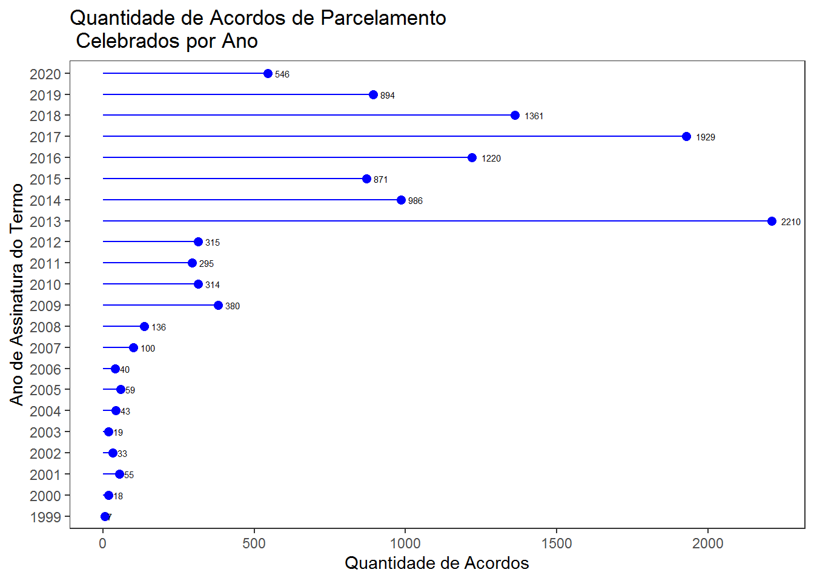
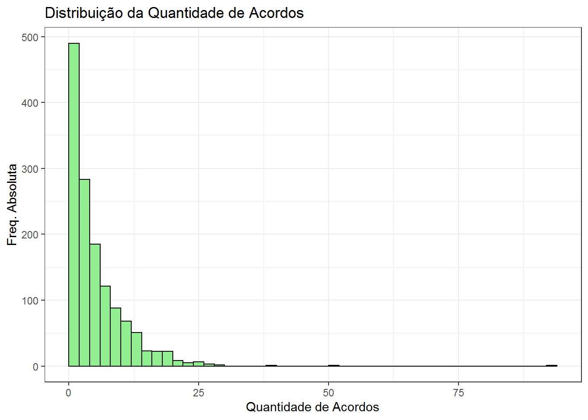

Capítulo 7 Parcelamento de Débitos
Este capítulo trata da base de dados dos acordos de parcelamento de débito, na qual estão contidas informações sobre os termos de parcelamento de débitos celebrados pelos RPPS com os entes aos quais estão vinculados.
O objetivo do capítulo é explorar os dados e as possíbilidades de análise fornecidas por esse conjunto de dados, podendo-se destacar a identificação dos entes que estejam com parcelamentos de débito ativos junto ao seu RPPS, a quantidade de parcelamentos ativos, o valor consolidado dos parcelamentos o saldo a pagar.
A SPREV disponiliza uma página em seu site inteiramente dedicada ao parcelamento de débitos na qual são disponibilizados alguns materiais sobre o assunto.
7.1 Importação e limpeza dos dados
A importação da base de dados pode ser feita da seguinte forma:
parcel <- read_excel("dados/6-rg-ap-acor-parc_atualizacao_jan_de_1999-a-ago_2020_extracao_em_20201002.xlsx",
skip = 3,
col_names = FALSE)
names(parcel) <- c("ente", "uf", "tipo", "situacao", "num_acordo", "rubrica",
"lei", "dt_consol", "dt_assin", "dt_venc1a", "compet_ini",
"compet_fin", "vlr_consol", "qtd_parc", "vlr_parc_ini",
"sd_estim_satualiz", "sd_estim_catualiz", "comp_indice",
"comp_tp_juros", "comp_txjuros", "comp_multa", "parcvinc_indice",
"parcvinc_tpjuros", "parcvinc_txjuros", "parcvinc_multa",
"parcatraso_indice", "parcatraso_tpjuros",
"parcatraso_txjuros", "parcatraso_multa")Importados os dados convém inspecioná-los para verificar se tudo correu bem no processo de importação:
# A tibble: 6 x 29
ente uf tipo situacao num_acordo rubrica lei dt_consol dt_assin dt_venc1a compet_ini compet_fin vlr_consol qtd_parc vlr_parc_ini sd_estim_satual~ sd_estim_catual~
<chr> <chr> <chr> <chr> <chr> <chr> <chr> <chr> <chr> <chr> <chr> <chr> <chr> <chr> <chr> <chr> <chr>
1 Abad~ GO P Aceito 00198/2009 OUTR LEI ~ 27/03/20~ 27/03/2~ 30/04/20~ 02/2007 12/2008 216.084,06 240 900,35 91.835,70 218.568,97
2 Abad~ GO P Aceito 01121/2016 CP60 Lei ~ 21/12/20~ 21/12/2~ 30/12/20~ 02/2016 10/2016 585.393,82 60 9.756,56 136.591,84 199.424,09
3 Abad~ GO P Aceito 00138/2017 CP60 Lei ~ 03/02/20~ 06/02/2~ 01/03/20~ 10/2016 10/2016 45.123,45 60 752,06 12.785,02 18.282,58
4 Abad~ GO P Aceito 00645/2017 CP60 Lei ~ 24/07/20~ 24/07/2~ 31/08/20~ 02/2017 06/2017 461.544,36 60 7.692,41 169.233,02 233.541,57
5 Abad~ GO P Aceito 01426/2018 CP60 Lei ~ 21/12/20~ 21/12/2~ 30/01/20~ 02/2018 10/2018 1.172.611~ 24 48.858,83 146.576,49 177.357,55
6 Abad~ GO P Aceito 00143/2019 CP60 Lei ~ 08/02/20~ 11/02/2~ 31/03/20~ 11/2018 12/2018 396.962,34 22 18.043,74 54.131,22 64.416,15
# ... with 12 more variables: comp_indice <chr>, comp_tp_juros <chr>, comp_txjuros <chr>, comp_multa <chr>, parcvinc_indice <chr>, parcvinc_tpjuros <chr>, parcvinc_txjuros <chr>,
# parcvinc_multa <lgl>, parcatraso_indice <chr>, parcatraso_tpjuros <chr>, parcatraso_txjuros <chr>, parcatraso_multa <chr>Feita a importação, quase sempre será necessário realizar o pré-processamento da base de dados.
Da mesma forma que os dados do DIPR, os dados dos parcelamentos foram estruturados pela SPREV para serem visualizados e impressos e não para serem consumidos por aplicativos com vistas à sua análise informatizada.
Esse fato é reflexo da falta de cultura de análise de dados ainda existente na administração pública onde a regra em geral é a análise de varejo, RPPS a RPPS, tendo por base frequentemente relatórios impressos em papel.
Para que o trabalho posterior com esta base de dados seja facilitado, será necessário converter algumas variáveis para o formato numérico e outras para o formato de data:
# Converter dados para o formato numérico e para datas
convNum <- function(x){
as.numeric(gsub(",", ".", gsub("\\.", "", x)))
}
convData <- function(x){
as.Date(parse_date_time2(x, orders = "d/m/Y"))
}
colunas_converter_num <- c("vlr_consol", "qtd_parc", "vlr_parc_ini", "sd_estim_satualiz", "sd_estim_catualiz", "comp_txjuros", "comp_multa", "parcvinc_txjuros", "parcvinc_multa", "parcatraso_txjuros", "parcatraso_multa")
colunas_converter_dt <- c("dt_consol", "dt_assin", "dt_venc1a")
parcel <- parcel %>%
mutate(compet_ini = as.Date(parse_date_time(compet_ini, orders = "m/Y")),
compet_fin = as.Date(parse_date_time(compet_fin, orders = "m/Y")),
ente = gsub("^Governo do ", "", ente))
# Conversão dos valores numéricos
parcel <- parcel %>%
mutate(across(.cols=all_of(colunas_converter_num), convNum))
# Conversão das datas
parcel <- parcel %>%
mutate(across(.cols=all_of(colunas_converter_dt), convData))Como pode ser visto, a base de dados traz um conjunto amplo de informações (29 colunas) sobre os termos de parcelamento de débitos.
As colunas 1 a 17 contém informações sobre as caracteristicas do termo de parcelamentos. As 4 colunas seguinte traz informações sobre os parâmetros utilizados para a consolidação do débito, o mesmo ocorrendo com as 8 colunas finais que trazem os parâmetros para a atualização das parcelas a vencer e das parcelas vencidas.
7.2 Análise exploratória
Agora já é possível explorar algumas variáveis com o objetivo de conhecer as informações que as mesmas contém.
Começa-se com a variável tipo. Quais a distribuição de frequência dessa variável?
tipo n percent
P 9705 82%
R 2126 18%São apenas dois valores indicando tratar-se de parcelamento ou reparcelamento.
situacao n percent
Aceito 5754 49%
Aguardando análise 299 3%
Aguardando doc. assinado 754 6%
Não aceito 1467 12%
Quitado 1483 13%
Repactuado 2074 18%Algumas possibilidades para a variável situação. Vê-se que alguns termos estão quitados, outros não foram aceitos pela SPREV, etc.
Essa variável parece ser importante quando da realização de algumas análises. Por exemplo, termos já quitados talvez não devam ser inseridos na análise caso o interesse seja determinar o volume de dívida dos entes com os RPPS. O mesmo se aplica aos termos não aceitos.
rubrica n percent
C240 1181 9.98%
CP60 4669 39.46%
CSEG 626 5.29%
OUTR 3040 25.70%
P200 1259 10.64%
S200 511 4.32%
U200 196 1.66%
U240 27 0.23%
UIRP 322 2.72%Os valores da variável rubrica são uns códigos cripticos mas que informam a origem do débito e a quantidade de parcelas. Assim, CP60 refere-se a débito com origem no não repasse da contribuição patronal, parcelado em até 60 meses. UIRP refere-se a parcelamento de débitos originados da utilização irregular de recursos previdenciários e por aí vai.
Interessante observar que a rubrica com a segunda maior quantidade de acordos seja OUTR. Isso porque o esperado é que as situações mais frequentes já tenham sido mapeadas pela SPREV e disponibilizadas como opção de escolha no CADPREV.
Outro fato interessane é o código CSEG que indica débito oriundo do não recolhimento ao RPPS das contribuiçãoes dos segurados, o que em tese constitui crime de apropriação indébita. Mas é uma possibilidade oficialmente reconhecida.
As demais variáveis são mais ou menos autoexplicativas.
Para a obtenção de um sumário estatístico da variável qtd_parc pode-se fazer:
Min. 1st Qu. Median Mean 3rd Qu. Max.
1.0 60.0 60.0 113.4 200.0 540.0 O resultado indica a existência de acordos de parcelamento passuindo apenas 1 parcela, até o máximo de 540 parcelas! Para identificar esses casos extremos pode-se utilizar os seguintes comandos:
# A tibble: 31 x 29
ente uf tipo situacao num_acordo rubrica lei dt_consol dt_assin dt_venc1a compet_ini compet_fin vlr_consol qtd_parc vlr_parc_ini sd_estim_satual~ sd_estim_catual~
<chr> <chr> <chr> <chr> <chr> <chr> <chr> <date> <date> <date> <date> <date> <dbl> <dbl> <dbl> <dbl> <dbl>
1 Abae~ PA P Quitado 01571/2017 U200 Lei ~ 2017-10-20 2017-11-01 2017-12-30 2009-01-01 2009-12-01 146765. 1 146765. 0 0
2 Açai~ MA P Não ace~ 00562/2019 CP60 <NA> 2019-07-15 2019-07-15 2019-07-19 2013-12-01 2017-12-01 6943. 1 6943. 0 0
3 Açai~ MA P Aguarda~ 00070/2020 OUTR <NA> 2020-01-01 2020-01-24 2020-01-24 2019-01-01 2019-07-01 3633908. 1 3633908. 0 0
4 Água~ SP P Quitado 00853/2014 OUTR LEI ~ 2014-12-18 2014-12-18 2015-01-15 2013-03-01 2014-03-01 216232. 1 216232. 0 0
5 Apar~ SP P Aceito 00051/2020 CP60 LEI ~ 2020-01-17 2020-01-17 2020-02-28 2019-07-01 NA 423729. 1 423729. 0 0
6 Arra~ RJ P Aceito 00916/2019 CP60 <NA> 2019-12-16 2019-12-20 2020-01-30 2014-03-01 2019-04-01 31413. 1 31413. 0 0
7 Arra~ RJ P Aguarda~ 00921/2019 OUTR <NA> 2020-05-25 2020-07-22 2020-08-31 2014-02-01 2019-02-01 5066. 1 5066. 0 0
8 Arra~ RJ P Aguarda~ 00301/2020 CP60 <NA> 2020-05-26 2020-07-22 2020-08-31 2019-01-01 2019-04-01 28640. 1 28640. 0 0
9 Arra~ RJ P Aguarda~ 00302/2020 OUTR <NA> 2020-05-26 2020-07-22 2020-08-31 2019-01-01 2019-04-01 14493. 1 14493. 0 0
10 Arra~ RJ P Aguarda~ 00373/2020 OUTR <NA> 2020-08-10 2020-08-11 2020-08-30 2014-01-01 2019-04-01 129700. 1 129700. 0 0
# ... with 21 more rows, and 12 more variables: comp_indice <chr>, comp_tp_juros <chr>, comp_txjuros <dbl>, comp_multa <dbl>, parcvinc_indice <chr>, parcvinc_tpjuros <chr>,
# parcvinc_txjuros <dbl>, parcvinc_multa <dbl>, parcatraso_indice <chr>, parcatraso_tpjuros <chr>, parcatraso_txjuros <dbl>, parcatraso_multa <dbl>Tem-se 31 acordos nesta situação.
# A tibble: 1 x 29
ente uf tipo situacao num_acordo rubrica lei dt_consol dt_assin dt_venc1a compet_ini compet_fin vlr_consol qtd_parc vlr_parc_ini sd_estim_satual~ sd_estim_catual~
<chr> <chr> <chr> <chr> <chr> <chr> <chr> <date> <date> <date> <date> <date> <dbl> <dbl> <dbl> <dbl> <dbl>
1 Pass~ MG P Aceito 00053/2007 OUTR AÇÃO~ 2007-04-18 2007-04-18 2007-05-10 2004-09-01 2006-12-01 2140939. 540 3965. 1502621. 3921842.
# ... with 12 more variables: comp_indice <chr>, comp_tp_juros <chr>, comp_txjuros <dbl>, comp_multa <dbl>, parcvinc_indice <chr>, parcvinc_tpjuros <chr>, parcvinc_txjuros <dbl>,
# parcvinc_multa <dbl>, parcatraso_indice <chr>, parcatraso_tpjuros <chr>, parcatraso_txjuros <dbl>, parcatraso_multa <dbl>Apenas um acordo com o valor máximo e possui débito originário de ação de cobrança.
Pode-se fazer um gráfico mostrando a quantidade de acordos celebrados por ano.
parcel %>%
mutate(ano_assinatura = format(dt_assin, "%Y")) %>%
count(ano_assinatura, name = "qtd") %>%
ggplot(aes(y=ano_assinatura, x=qtd, label = qtd)) +
geom_point(color="blue", size=2.3) +
geom_segment(aes(xend=0, yend=ano_assinatura), color="blue") +
geom_text(hjust=-0.5, size=2) +
theme_bw() +
labs(title="Quantidade de Acordos de Parcelamento \n Celebrados por Ano",
x = "Quantidade de Acordos",
y = "Ano de Assinatura do Termo") +
theme(panel.grid.major = element_blank(),
panel.grid.minor = element_blank())
Até 2008 não não eram celebrados muitos acordos. A partir de 2009 há um acréscimo e em 2013 houve uma explosão na quantidade de acordos celebrados, mantando-se elevados esse quantitativo a partir de então.
Uma outra verificação importante ainda na fase de análise exploratária é verificar qual o percentual de valores não preenchidos em cada variável.
parcel %>%
summarize(across(.fns = ~round(sum(is.na(.))/length(.) * 100, 1))) %>%
t() %>%
as.data.frame() %>%
filter(V1 > 0) %>%
arrange(desc(V1)) V1
parcvinc_multa 100.0
comp_multa 56.8
compet_fin 21.9
parcatraso_multa 12.0
lei 11.0
comp_txjuros 3.3
parcvinc_txjuros 3.1
parcvinc_tpjuros 3.0
parcatraso_tpjuros 3.0
parcatraso_txjuros 3.0
comp_tp_juros 2.9
compet_ini 0.8A variável compet_fin apresenta um valor de aproximadamente 22% de valores faltantes. Ao investigar a razão desse valor verificou-se que o processo de importação dos dados estava gerando os NA visto que a função de conversão de datas não reconhece situações como 13/2014 que indica a inclusão do 13o salário. Esse fato irá ensejar uma forma alternativa de lidar com essa situação durante o processo de importação dos dados.
As variáveis indicativas do percentual de multa também apresentam valores elevados de não preenchimento.
7.3 Parcelamentos ativos
A variável situacao indica, como visto, a situação do parcelamento na data da geração da base de dados. Os valores possíveis dessa variável foram vistos acima.
Para adotar uma postura conservadora em relação ao montante de dívida oriunda de parcelamentos que os entes possuem com seus RPPS serão excluídos da base de dados todos os acordos que não possuam a situação Aceito e Repactuado.
Será criada uma nova base de dados parcel_ativos, contendo apenas os acordos de interesse.
A base de dados reduz de 11.831 observações para 7.828.
Qual a quantidade de Aceitos e Repactuados?
situacao n percent
Aceito 5754 48.63%
Aguardando análise 299 2.53%
Aguardando doc. assinado 754 6.37%
Não aceito 1467 12.40%
Quitado 1483 12.53%
Repactuado 2074 17.53%Como pode ser visto, a base agora contém apenas os parcelamentos aceitos e os repactuados.
7.4 Agregação dos parcelamentos
Neste tópico será feita uma agregação dos dados com vistas a mostrar para cada ente o quantitativo de acordos e correspondente valor, considerando-se apenas os acordos aceitos e repactuados.
tab_qtd_acordos_ente <- parcel_ativos %>%
group_by(ente) %>%
summarise(qtd_acordos = n(),
vlr_consolidado = sum(vlr_consol, na.rm=TRUE),
sd_sem_atualiz = sum(sd_estim_satualiz, na.rm = TRUE),
sd_com_atualiz = sum(sd_estim_catualiz, na.rm = TRUE),
`%_sd_sem_atualiz` = round(sd_sem_atualiz / vlr_consolidado * 100, 2),
`%_sd_com_atualiz` = round(sd_com_atualiz / vlr_consolidado * 100, 2)) %>%
arrange(desc(vlr_consolidado))# A tibble: 6 x 7
ente qtd_acordos vlr_consolidado sd_sem_atualiz sd_com_atualiz `%_sd_sem_atualiz` `%_sd_com_atualiz`
<chr> <int> <dbl> <dbl> <dbl> <dbl> <dbl>
1 Curitiba 5 766061169. 437908053. 595705732. 57.2 77.8
2 Betim 14 660917411. 392294258. 611880378. 59.4 92.6
3 Florianópolis 20 655221375. 364905999. 502711269. 55.7 76.7
4 Estado do Tocantins 6 625112375. 170074534. 237037997. 27.2 37.9
5 Campos dos Goytacazes 14 528714449. 287508688. 383896245. 54.4 72.6
6 Manaus 12 450433945. 312709216. 474798435. 69.4 105. Tem-se agora um novo conjunto de dados que mostra, para cada ente, a quantidade de acordos celebrados o valor consolidado correspondente, o valor do saldo a pagar sem atualização e com atualização e os percentuais que esses valores representam da consolidação.
Sumário da quantidade de acordos e valores consolidados:
qtd_acordos vlr_consolidado sd_sem_atualiz sd_com_atualiz %_sd_sem_atualiz %_sd_com_atualiz
Min. : 1.000 Min. : 19939 Min. : 0 Min. : 0 Min. : 0.00 Min. : 0.00
1st Qu.: 2.000 1st Qu.: 1245751 1st Qu.: 332230 1st Qu.: 608469 1st Qu.:26.48 1st Qu.: 44.14
Median : 4.000 Median : 3957559 Median : 1584543 Median : 2678750 Median :46.63 Median : 74.97
Mean : 5.672 Mean : 21616000 Mean : 11493585 Mean : 16910681 Mean :43.26 Mean : 69.06
3rd Qu.: 8.000 3rd Qu.: 13229078 3rd Qu.: 6959524 3rd Qu.: 10219905 3rd Qu.:61.28 3rd Qu.: 96.04
Max. :94.000 Max. :766061169 Max. :437908053 Max. :611880378 Max. :99.50 Max. :173.33 Os entes com menos acordos possuem 1 acordo mas tem-se um campeão com 94 acordos de parcelamento!
A mediana é de 4 acordos, indicando que metade dos RPPS possuem de 1 a 4 acordos.
A seguir elabora-se um histograma para mostrar a distribuição da variável qtd_acordos:
ggplot(tab_qtd_acordos_ente, aes(x=qtd_acordos)) +
geom_histogram(color='black', fill='lightgreen', binwidth = 2, boundary=0) +
labs(title = "Distribuição da Quantidade de Acordos",
x = "Quantidade de Acordos",
y = "Freq. Absoluta") +
theme_bw()
Com quase quinhentos registros, tem os entes com até 2 acordos, com a frequência decrescendo à medida que a quantidade de acordos por ente vai aumentando. Existem alguns valores bem elevados, acima de 50 acordos de parcelamento. Pode-se perguntar quem são os top 5 em quantidade de acordos?
# A tibble: 5 x 7
ente qtd_acordos vlr_consolidado sd_sem_atualiz sd_com_atualiz `%_sd_sem_atualiz` `%_sd_com_atualiz`
<chr> <int> <dbl> <dbl> <dbl> <dbl> <dbl>
1 São Leopoldo 94 350607427. 232622410. 335294406. 66.4 95.6
2 São Domingos 51 17902053. 12173178. 16537416. 68 92.4
3 Caldas Novas 40 82449581. 43791345. 56376090. 53.1 68.4
4 Goiatuba 30 56247076. 45170631. 59801790. 80.3 106.
5 Campo Novo de Rondônia 30 44400218. 27169628. 39744311. 61.2 89.5A relação acima mostra os 5 entes com a maior quantidade de acordos, o que não significa serem os maiores devedores.
7.5 Cobrança de juros simples
É comum acordos de parcelamento nos quais são adotadas taxas de juros incompatíveis com a meta atuarial, seja nos valores dos juros, seja no regime de capitalização, ou seja, adoção de juros simples em fez dos juros compostos.
Para as parcelas vincendas, a base de dados contém as seguintes variáveis: parcvinc_indice, parcvinc_tpjuros, parcvinc_txjuros e parcvinc_multas.
Mostra-se, a seguir, a distribuição de frequência do tipo de juros encontrados nos parcelamentos ativos:
parcel_ativos %>%
count( parcvinc_indice, parcvinc_tpjuros) %>%
pivot_wider(names_from =parcvinc_indice , values_from=n)# A tibble: 3 x 8
parcvinc_tpjuros `IGP-DI` `IGP-M` INPC `IPC-FIPE` IPCA Outros SELIC
<chr> <int> <int> <int> <int> <int> <int> <int>
1 Composto 1 134 574 12 438 30 18
2 Simples 25 304 2777 73 2893 166 118
3 <NA> NA NA NA NA 1 3 261Além do uso de juros simples também existe a adoção da taxa SELIC como indexador da inflação!
Parece que existe um bom estímulo a que os entes não repassem as constribuições aos RPPS! É um ótimo negócio o ente se financiar junto ao RPPS pagando juros simples!
Além disso, atuarialmente essa é uma prática contrária ao princípio constitucional do equilíbrio financeiro e atuarial visto que induz a formação de deficts atuariais.
7.6 Adimplência dos parcelamentos
Nota: O contéudo desta seção baseia-se em muitas suposições sobre as variáveis que precisam ser cofirmadas junto à SPREV.
Monitorar se os parcelamentos de débitos vem sendo adimplidos com regularidade é algo que as pessoas interessadas na saúde financeira dos RPPS podem querer fazer. Assim, uma questão que surge é a seguinte: os dados contidos nessa base permitem avaliar se o ente vem pagando com regularidade sua dívida junto ao RPPS?
A base contém algumas variáveis que podem ajudar a responder a questão. A variável vlr_consol informa o valor total do débito consolidado, a variável qtd_parc indica a quantidade de parcelas do débito, a variável vlr_parc_ini indica o valor da parcela inicial (essa variável é o quociente entre as variáveis vlr_consol e qtd_parc), a variável dt_venc1a informa a data de vencimento da primeira parcela e a variável sd_estim_satualiz informa o saldo estimado da dívida sem atualização.
Para a metodologia proposta para checagem do regular adimplemento do parecelamento, assume-se que a variável sd_estim_satualiz reflita o saldo a pagar na data de geração dos dados, ou seja, é a diferença entre o valor consolidado e o valor já pago.
Ocorre que o valor já pago não consta da base de dados, mas pode ser determinado multiplicando-se o valor da primeira parcela pela quantidade de meses decorridos da data de vencimento da primeira parcela até a data de geração dos dados.
Assume-se a hipótese (a ser confirmada junto à SPREV) de que o valor da variável sd_estim_satualiz seja gerado pela SPREV a partir de informações colhidas no DIPR, de forma que cada parcela informada naquele demonstrativo seja subtraída do valor consolidado do débito de forma que decorrido o prazo do parcelamento (qtd_parc) o débito esteja quitado.
Com essas suposições, uma verificação que talvez possa fornecer alguma indicação quanto a regularidade do pagamento dos acordos seria dividir o saldo estimado sem atualização pelo valor da parcela inicial. Isso daria a quantidade de parcelas que ainda faltam a ser pagas.
Diminuindo esse valor da quantidade de parcelas, obtem-se a quantidade de parcelas pagas. Tomando a data de vencimento da primeira parcela e adicionando-se a quantidade de meses iqual à quantidade de parcelas pagas espera-se obter uma data próxima à data de extração dos dados que se deu em 02/10/2020 conforme consta no nome do arquivo contendo os dados.
O código a seguir implementa essa ideia, calculando a data referente à última parcela na data de extração dos dados.
parcel_ativos2 <- parcel_ativos %>%
mutate(qtd_parc_apagar = sd_estim_satualiz / vlr_parc_ini,
qtd_parc_pagas = qtd_parc - qtd_parc_apagar,
dt_parc_atual = dt_venc1a + months(as.integer(qtd_parc_pagas)))# A tibble: 6 x 32
ente uf tipo situacao num_acordo rubrica lei dt_consol dt_assin dt_venc1a compet_ini compet_fin vlr_consol qtd_parc vlr_parc_ini sd_estim_satual~ sd_estim_catual~
<chr> <chr> <chr> <chr> <chr> <chr> <chr> <date> <date> <date> <date> <date> <dbl> <dbl> <dbl> <dbl> <dbl>
1 Abad~ GO P Aceito 00198/2009 OUTR LEI ~ 2009-03-27 2009-03-27 2009-04-30 2007-02-01 2008-12-01 216084. 240 900. 91836. 218569.
2 Abad~ GO P Aceito 01121/2016 CP60 Lei ~ 2016-12-21 2016-12-21 2016-12-30 2016-02-01 2016-10-01 585394. 60 9757. 136592. 199424.
3 Abad~ GO P Aceito 00138/2017 CP60 Lei ~ 2017-02-03 2017-02-06 2017-03-01 2016-10-01 2016-10-01 45123. 60 752. 12785. 18283.
4 Abad~ GO P Aceito 00645/2017 CP60 Lei ~ 2017-07-24 2017-07-24 2017-08-31 2017-02-01 2017-06-01 461544. 60 7692. 169233. 233542.
5 Abad~ GO P Aceito 01426/2018 CP60 Lei ~ 2018-12-21 2018-12-21 2019-01-30 2018-02-01 2018-10-01 1172612. 24 48859. 146576. 177358.
6 Abad~ GO P Aceito 00143/2019 CP60 Lei ~ 2019-02-08 2019-02-11 2019-03-31 2018-11-01 2018-12-01 396962. 22 18044. 54131. 64416.
# ... with 15 more variables: comp_indice <chr>, comp_tp_juros <chr>, comp_txjuros <dbl>, comp_multa <dbl>, parcvinc_indice <chr>, parcvinc_tpjuros <chr>, parcvinc_txjuros <dbl>,
# parcvinc_multa <dbl>, parcatraso_indice <chr>, parcatraso_tpjuros <chr>, parcatraso_txjuros <dbl>, parcatraso_multa <dbl>, qtd_parc_apagar <dbl>, qtd_parc_pagas <dbl>,
# dt_parc_atual <date>Caso os entes tenham realizado os pagamentos com regularidade, espera-se que os valores da variável dt_parc_atual estejam próximas a Out/2020, visto que a data de extração dos dados foi em 02/10/2020.
Uma rápida verificação do range da variável irá confirmar se de fato isto está ocorrendo:
[1] "2011-02-15" "2032-05-01"Diferentemente do esperado, tem-se datas que vão do ano de 2011 a 2032. O que pode ter acontecido?
O código a seguir faz a contagem das datas no mês de outubro de 2020.
parcel_ativos2 %>%
count(out2020 = dt_parc_atual %within% interval(dmy("01102020"), dmy("31102020")))# A tibble: 3 x 2
out2020 n
<lgl> <int>
1 FALSE 2513
2 TRUE 5251
3 NA 64O resultado mostra que 5251 registros possuem a data da parcela atual no mês de outubro de 2020 e que 2513 não.
Deve-se olhar com mais cuidado para esses 2513 registros. O código a seguir aplica um filtro para captuar esse registros.
nao_conformes <- parcel_ativos2 %>%
filter(!dt_parc_atual %within% interval(dmy("01102020"), dmy("31102020")))Inspecionando os dados, verifica-se que parte deles possuem o valor da variável sd_estim_satualiz zerado, o que não é algo que seria esperado de ocorrer, visto que os parcelamentos já quitados foram excluídos da base de dados. Deve-se obter mais informações junto à SPREV quanto as possíveis causas desse fato.
sd_zero <- nao_conformes %>%
filter(sd_estim_satualiz == 0)
nao_conformes %>%
count(sd_zerado = sd_estim_satualiz == 0) # A tibble: 2 x 2
sd_zerado n
<lgl> <int>
1 FALSE 403
2 TRUE 2110Dos 2513 acordos, 2110 estão nessa situação. Os demais 403 não estão conforme o esperado por outra razão ainda a ser determinada.
O códido a seguir cria uma nova base com esses 403 registros para investigação posterior.
Inspecionando a base de dados, verifica-se que muitos registros possuem a data da última parcela em Set/2020 que é próximo do esperado, não representando uma não conformidade, de forma que serão excluídos da base.
nao_conformes3 <- nao_conformes2 %>%
filter(!dt_parc_atual %within% interval(dmy(01092020), dmy(30092020))) Com esse filtro, a quantidade de registros “não conformes” cai para 52.
O código a seguir obtém a quantidade de datas em cada ano:
# A tibble: 11 x 2
ano_data n
<chr> <int>
1 2020 2
2 2021 15
3 2022 7
4 2023 9
5 2024 7
6 2025 5
7 2026 2
8 2027 1
9 2028 1
10 2031 2
11 2032 1Tem-se duas datas em 2020 (Nov e Dez) e as demais em anos posteriores.
Uma possível justificativa para isso (mas que deve ser confirmado junto à SPREV) seria o pagamento de mais de uma parcela no mês, o que levaria a um valor de sd_estim_satuliz inferior ao que seria esperadoe e a uma quantidade de parcelas a serem pagas maior que o correto. Isso implica datas da parcela atual posteriores a Out/2020.